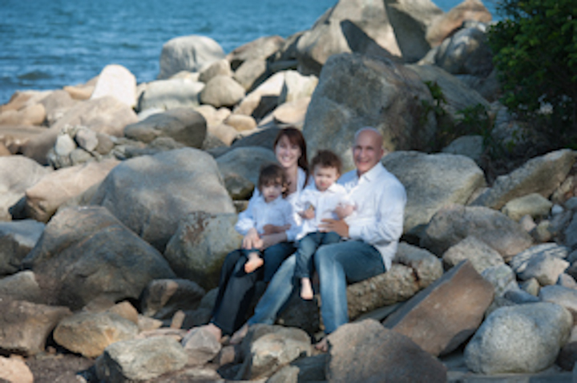

Photography is a universal language - no need for words, no need for translation. At home, everyone loves to take photos to capture moments, events, the occasional little creatures in the yard and passing trucks while travelling on the road.